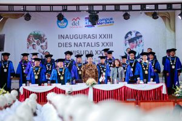

.jpg)

.jpg)
Pada Hari Sabtu 23 September 2023, Institut Teknologi Del melaksanakan Wisuda untuk 398 Mahasiswa Sarjana dan Diploma. Turut hadir Bapak Dr. Honoris Causa Ir. Airlangga Hartarto, MBA, MMT (Menteri Koordinator Bidang Perekonomian Republik Indonesia), Bapak Rionald Silaban (Direktorat Jendral Kekayaan Negara), Bapak Jend. TNI (Purn.) Luhut Binsar Pandjaitan, M.P.A (Ketua Pembina Yayasan Del), Ibu Intan Simanjuntak (Ketua Pengurus Yayasan Del), dan tamu undangan lainnya. Kegiatan Wisuda ini dilaksanakan di Gedung Serba Guna Yayasan Del dengan tema “Fostering Collaboration and Innovation towards Research Excellence”.
Pada Wisuda tahun ini terdapat sebanyak 398 wisudawan dan wisudawati yang terdiri dari 51 mahasiswa dari jurusan D3 Teknologi Informasi, 47 mahasiswa dari jurusan D3 Teknologi Komputer, 64 mahasiswa dari jurusan D4 Teknologi Rekayasa Perangkat Lunak, 66 mahasiswa dari jurusan S1 Informatika, 71 mahasiswa dari jurusan S1 Sistem Informasi, 35 mahasiswa dari jurusan S1 Teknik Elektro, 44 mahasiswa dari jurusan S1 Manajemen Rekayasa, dan 20 mahasiswa dari jurusan S1 Teknik Bioproses.
Prof. Stella Cristie, Ph.d (Tsinghua University) dalam kesempatan ini memberikan Orasi Ilmiah kepada para Wisudawan. Beliau menyampaikan kepada para wisudawan bahwa kehidupan selanjutnya adalah problem solving series yaitu fase yang harus dapat menganalisa atau memahami persoalan – persoalan yang ada serta bisa menyelesaikan persoalan tersebut secara sistematis dan sampai selesai. Karena setiap persoalan ataupun masalah pasti memiliki lebih dari satu jalan keluar. Terakhir beliau berpesan kepada wisudawan “Waktu anda memulai perkuliahan begitu bangganya anda bisa berkuliah di IT Del, sekarang IT Del yang bangga kepada kalian.”
Pada kesempatan ini Menteri Koordinator Bidang Perekonomian Dr. (H.C.) Ir. Airlangga Hartarto, M.B.A., M.M.T, memberikan ucapan selamat kepada wisudawan dan menyampaikan bahwa wisuda adalah hari bersejarah karena setelah ini akan terjun ke masyarakat secara langsung. Dalam sambutannya beliau juga memaparkan terkait pertumbuhan ekonomi di Indonesia yang akan terus positif dan sudah termasuk ke dalam upper – middle income country, untuk itu diharapkan kedepannya alumni dari IT Del dapat berperan dalam pembangunan Indonesia menuju Indonesia Emas (Maju, Mandiri, Sejahtera).
Sebagai Pembina Yayasan Del yang sangat mendukung dunia Pendidikan, Bapak Luhut Pandjaitan selalu berpesan kepada mahasiswa IT Del agar tidak hanya soal pintar tetapi juga dengan hati. “Selamat bertugas, permulaan dari suatu perjalanan yang panjang buat kalian yang telah menyelesaikan studinya di IT Del.” pesan Beliau.
Pada kegiatan ini juga berlangsung penandatanganan prasasti Laboratorium Keamanan Siber oleh Bapak Menteri Koordinator Bidang Perekonomian Dr. (H.C.) Ir. Airlangga Hartarto, M.B.A., M.M.T dan Bapak Jend. TNI (Purn.) Luhut Binsar Pandjaitan, M.P.A (Ketua Pembina Yayasan Del). Besar harapannya dengan keberadaan Laboratorium ini dapat mendukung IT Del dalam menciptakan talent-talent baru dalam bidang keamanan siber di Indonesia.

Sitoluama, 22 September 2023 Institut Teknologi Del menyelenggarakan Acara Pengukuhan Mahasiswa Baru Angkatan XXIII dan Dies Natalis ke XXII. Kegiatan ini dihadiri oleh Ketua Pembina Yayasan Del, Bapak Luhut Binsar Pandjaitan dan Ibu Devi Pandjaitan, Ketua Pengurus Yayasan Del, Ibu Intan Simanjuntak, Rektor IT Del Bapak Dr. Arnaldo Marulitua Sinaga, S.T., M.InfoTech, Senat akademik Prof. Roberd Saragih, Ketua supervisor Habibie Center Ilham Akbar Habibie, Dirjen Kekayaan Negara Rionald Silaban, CEO PT. Privy Marshall Pribadi, Wakil Ketua CNGR Internasional Fu Peiwen, bersama orang tua mahasiswa dan para undangan lainnya. Kegiatan ini dilaksanakan di Gedung Serba Guna Yayasan Del.
Sebagai pembuka, Wakil Rektor Bidang Akademik dan Kemahasiswaan, Dr. Johannes Harungguan Sianipar, S.T., M.T mewakili panitia penerimaan mahasiswa baru melaporkan bahwa jumlah mahasiswa baru yang dikukuhkan sebanyak 483 mahasiswa, yang terdiri dari DIII Teknologi Infomasi 60 mahasiswa, DIII Teknologi Komputer 51 mahasiswa, Sarjana Terapan Teknologi Rekayasa Perangkat Lunak 98 mahasiswa, S1 Informatika 55 mahasiswa, S1 Sistem Informasi 51 mahasiswa, S1 Teknik Elektro 37 mahasiswa, S1 Manajemen Rekayasa 62 mahasiswa, dan S1 Teknik Bioproses 34 mahasiswa.
Rektor IT Del, Bapak Arnaldo Marulitua Sinaga pada paparannya menyampaikan rencana induk pengembangan institusi yang saat ini berada pada fase Excellent Learning dan Research Institute yang sejalan dengan tema hari ini yaitu “Fostering Collaboration and Innovation Towards Research Excellence”. Beliau juga menyampaikan bahwa akan adanya kampus dua IT Del di area TSTH2 (Taman Sains Teknologi Herbal dan Hortikultura) yang berada di Pollung, Humbang Hasundutan. Dengan hadirnya kampus dua IT Del di area TSTH2 diharapkan akan semakin mendukung pembelajaran – pembelajaran berbasis riset dan penelitian – penelitian unggul yang hendak disampingkan.
Dilanjutkan dengan kata Sambutan dari Ketua Dewan pembina The Habibie Center Dr.-Ing. H. Ilham Akbar Habibie, Dipl.Ing., M.B.A. Beliau menyampaikan mengenai pentingnya Tri Dharma Perguruan Tinggi yaitu pendidikan dan pengajaran, penelitian dan pengembangan, pengabdian kepada masyarakat. Beliau menekankan pentingnya Sumber Daya Manusia yang unggul dengan penguasaan dan penerapan IPTEK. Beliau berkata bahwa suatu negara tidak bisa maju, berdaulat dan menjadi berkedaulatan jika tidak bisa menguasai IPTEK.
Sesuai dengan tema Pengukuhan Mahasiswa Baru “Fostering Collaboration and Innovation Towards Research Excellence” yang berarti terus berkolaborasi dan berinovasi hingga menjadi institut penelitian terbaik, sehingga pada kesempatan ini dilakukan Penandatanganan MoU IT Del dengan PT. Privy Identitas Digital, PT Mayora Indah Tbk., Yayasan Satriabudi Dharma Setia, CNGR Advanced Material Co. Ltd disaksikan oleh Bapak Luhut Binsar Pandjaitan dan Ibu Intan Simanjuntak.

Horas Warga Sumatera Utara!!!
Dinas Ketenagakerjaan Provinsi Sumatera Utara kini bekerja sama dengan beberapa perusahaan dan institut yang menyediakan lowongan pekerjaan. Salah satunya adalah Institut Teknologi Del. Melalui acara JOB FAIR 2023 ini akan menjadi kesempatan baik untuk Anda bertemu dengan kami dari Institut Teknologi Del yang menyediakan berbagai peluang kerja.
Dibuka secara GRATIS pada:
Hari/Tanggal : Jum’at-Sabtu/07-08 Juli 2023
Pukul : 08.00 – 16.00 WIB
Tempat : Pekan Raya Sumatera Utara (Jl. Gatot Subroto Km. 5 Sei Sikambing C, Medan)
Pastikan kamu mendaftarkan diri hanya melalui website berikut:
https://forms.gle/1dVWwd7vv8adYEhW9
AYO PERSIAPKAN DIRIMU MENJADI BAGIAN DARI INSTITUT TEKNOLOGI DEL.